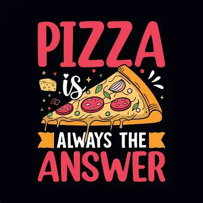

Over ons
Onze website werd gemaakt door Michele Pacale en Jelle Claessens. Als grote liefhebbers van pizza vonden wij dit het perfecte onderwerp om een informatieve website over te maken.Onze bedoeling
De bedoeling van onze website is om het publiek te informeren over pizza. We willen mensen meer leren over de geschiedenis van pizza, hoe pizza zich over de wereld heeft verspreid en welke verschillende varianten er bestaan in andere landen. We vonden het belangrijk om de informatie op een duidelijke en interessante manier te presenteren zodat iedereen het gemakkelijk kan begrijpen.Ons doel
Wij hopen dat bezoekers van onze website nieuwe informatie ontdekken en een beter beeld krijgen van hoe belangrijk pizza is geworden in de wereld.Michele Pacale & Jelle Claessens 🍕
